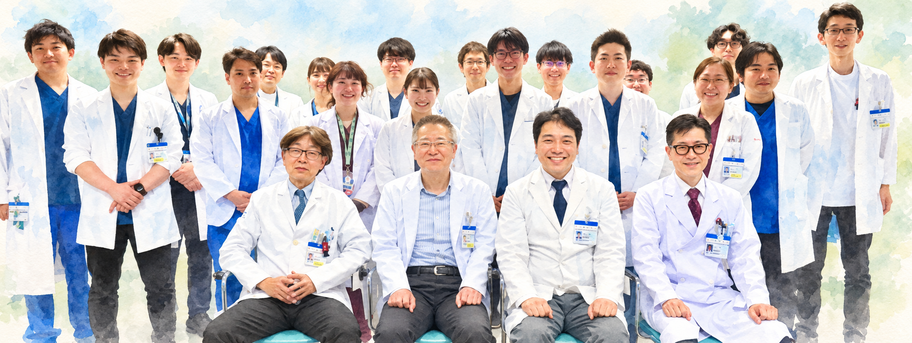

領域主任よりご挨拶
東海大学医学部付属病院は、神奈川県の県央・県西地区の中核病院として、多様な疾患や専門性の高い症例に対応しています。当科では「消化管」「肝臓」「胆膵」の3グループが連携し、幅広い臨床経験と専門性を身につけられる研修環境を整えています。日頃から声をかけ合い、和気あいあいとした雰囲気の中で、ともに学び、成長することを大切にしています。経験や習熟度に応じた指導を通じて、豊富な症例に主体的に関わる機会を支えます。学会活動や診療ガイドライン作成に携わる指導医とともに、診療・内視鏡の知識や技術を磨き、患者さんの心に寄り添う「良医」を目指します。経験や出身大学、性別、国籍を問わず、私たちと学び、働きたい先生を広く歓迎します。本院・八王子病院・関連病院の連携を活かし、臨床を深めたい、研究に取り組みたい、博士号を取得したいといった希望に応じて、研修や進路を一緒に考えます。見学や短期・長期の研修も受け付けていますので、お気軽にご相談ください。 岩崎栄典

消化器内科の活動報告
消化器内科での活動はインスタグラムで定期的に紹介しています。
消化器内科業績報告（責任著者・筆頭著者）
鶴谷康太が「Journal of Gastroenterology」に「Healthcare burden and clinical spectrum of symptomatic polycystic liver disease in Japan: a nationwide epidemiological survey.」を発表しました。症状や合併症のある多発性肝嚢胞症について、国内の患者数、症状、治療状況を調べた全国疫学調査です。2023年に診療・経過観察を受けた患者数は推計3,570人で、人口100万人あたり28.6人でした。詳細な情報を得た557人では、腹部膨満・腹痛・嚢胞感染が多く、半数以上が肝嚢胞の治療を受けていました。疾患の重症度評価や診療体制の検討に役立つ基礎データを示しています。
半田修が「Helicobacter」に「A Decade of Screening and Treating Helicobacter pylori Infection Among First-Year High School Students in Kyoto, Japan: Annual Trends in Infection, Consultation, and Eradication Success Rates (2015-2023)」を発表しました。京都府の高校1年生を対象に、2015～2023年のピロリ菌検診と除菌治療の経過を調べた研究です。確認された感染率は4.7%から1.5%へ低下し、治療方法の変更後には高い除菌成功率が得られました。一方、陽性判定後に医療機関を受診する割合の低下も明らかとなり、若年者の検診を治療につなげる支援の重要性を示しています。
佐野が「Arab Journal of Gastroenterology」に「Efficacy of deeper tissue sections for colorectal serrated polyps histologically diagnosed as normal mucosa.」を発表しました。内視鏡で鋸歯状ポリープが疑われたものの、病理で正常粘膜と判定された大腸病変に対し、追加の深切り切片で再評価した研究です。対象117病変のうち58病変で診断が変更され、病理切片の追加が診断の改善に役立つ可能性を示しました。変更の多くは過形成性ポリープで、SSLと再診断された病変は5病変でした。
岩崎栄典が「Digestive Endoscopy」に「Deus Sine Machina: Which Intelligence, for Whom.」を発表しました。内視鏡分野のAIを、医療資源の限られた地域で誰のために活用するかを論じた論考です。技術の性能だけでなく、地域ごとの疾病負担や未充足の医療ニーズを踏まえ、医療格差の縮小につながる導入と人材育成の重要性を提示しています。
広瀬俊治が「Hepatology Research」に「Rare Variants in PFIC-Related Genes Among Adults With Intrahepatic Cholestasis.」を発表しました。成人の肝内胆汁うっ滞患者19人を対象に、進行性家族性肝内胆汁うっ滞症（PFIC）関連遺伝子の希少変異を調べた研究です。4人（21%）にヘテロ接合性変異を認め、いずれも薬物性肝障害と診断されていました。
岩崎栄典が「Gastrointestinal Endoscopy」に「Clinical outcomes of endoscopic papillectomy for ampullary adenoma and adenocarcinoma: a multicenter retrospective study in Japan.」を発表しました。国内22施設の内視鏡的乳頭切除術の成績を検討した後ろ向き研究です。長期成績を解析した776人の3年累積再発率は20%で、切除断端が不明・陽性の場合は再発リスクが高くなりました。断端陰性でも再発がみられ、治療後の長期的な経過観察の重要性を示しています。
2025.06.17
三島佑介の博士学位論文「Liver-specific Nr1h4 deletion in mice with human-like bile acid composition causes severe liver injury」が「Journal of Lipid Research」に採択されました。ヒトに近い胆汁酸の組成を持つマウスを用い、胆汁酸の代謝を調節する遺伝子Nr1h4（FXR）の働きを肝臓で失わせると、重い肝障害が生じることを示した研究です。胆汁うっ滞による肝障害の仕組みの解明や、新たな治療法の開発につながる知見です。
臨床研究に関する公開情報
東海大学医学部 消化器内科
〒259-1193 神奈川県伊勢原市下糟屋143
東海大学医学部付属病院・医学部 代表
TEL：0463-93-1121（代表）
※診療や体調に関するお問い合わせは、各病院の消化器内科外来へお願いいたします。
 消化器内科肝臓班（加川研究室）
消化器内科肝臓班（加川研究室）